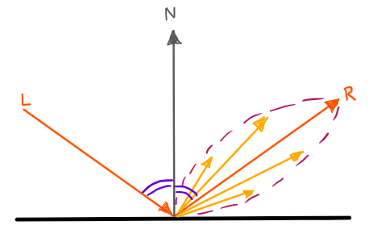

Ward's Model
Ward's Model of Anisotropic Reflection
Ward's model was first published in a SIGGRAPH paper in 1992, along with a measurement method for anisotropic reflection.
Ward's model aimed "not to present the ultimate mathematical model of reflectance", instead aiming to create one which fit measured reflectance data accurately, whilst maintaining mathematical simplicity, allowing faster rendering and implementation. As this model is used to model anisotropic reflection, three axes must be defined: we define the z-axis as the same as the normal vector from that point on the surface, whilst the x and y axes are tangential to the surface in perpendicular directions to each axis.
The Ward BRDF is defined by two components: a diffuse reflection term and a specular reflection term. The diffuse reflection is modelled by pd, which represents the diffuse reflectance, and the constant π. Our equation so far is written as:
where Is is equal to the specular reflection term, which will be defined.
The specular reflection term is much more complex, and to help to understand the three constants defined in the equation, we can look at the concept of specular lobes. Lobes refer to the shape of the specular reflection formed by light reflected off the surface of an object, which forms a lobe shape. On mirror-like surfaces, the width of the lobe is thinner, creating a specular reflection covering a smaller area. Conversely, on rough surfaces, the width of the lobe is larger, with the distribution of light intensity centred around the angle of reflection, due to the many microfacets within the surface. While the width of the lobe represents the area covered by the specular reflection, the magnitude of the lobe represents the intensity of light at that direction.

The three constant parameters defined in the equation:
- - specular reflectance, describing the intensity of specular highlights/lobe magnitude
- - standard deviation of surface slope in x direction of anisotropy (can be thought of as width of lobe in one direction)
- - standard deviation of surface slope in y direction of anisotropy (can be thought of as width of lobe in other direction)
If = , then the lobe is isotropic, as it is the same in all viewing directions around the z-axis.
The half vector is defined as the direction halfway between the incident direction of light and reflected direction. The rest of the equation uses parameters defined by the following angles:
- - polar angle between normal and incident direction
- - polar angle between normal and reflecting direction
- - angle between half vector and surface normal
- - azimuthal angle of half vector
Lastly, an approximate normalisation term, , is added, which ensures energy is conserved in the model. The final BRDF is then produced:
Normally the constants and for the surface slope are set by the user rather than measured.
Limitations of Ward's Model
One of the limitations is that the normalisation factor is only accurate for values . However, for this value of alpha, the surface is mostly modelled by diffuse reflectance instead.